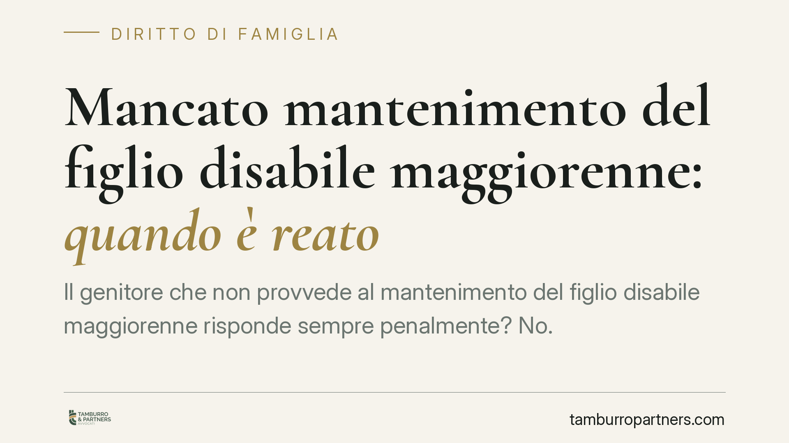

Mancato mantenimento del figlio disabile maggiorenne: quando è reato
Il genitore che non provvede al mantenimento del figlio disabile maggiorenne risponde sempre penalmente? No. Il diritto italiano distingue nettamente il piano civile dell'obbligo economico da quello penale, che scatta solo a condizioni precise. Chiarire questa differenza è essenziale per chi riceve un decreto di condanna civile e teme un'automatica esposizione penale, o viceversa.

Il caso: due responsabilità distinte
Quando si parla di mancato mantenimento del figlio disabile occorre tenere separati due piani che spesso vengono confusi.
Sul piano civile, l'obbligo di mantenere i figli discende dagli artt. 147 e 148 del codice civile, richiamati e integrati dagli artt. 315 bis, 316 bis e 337 septies c.c. Quest'ultimo, in particolare, disciplina i figli maggiorenni non economicamente autosufficienti: obbligo che, per il figlio con disabilità grave, tende a protrarsi senza il limite temporale che di norma vale per il figlio abile al lavoro.
È bene precisarlo: gli artt. 155-155 quinquies c.c., che in passato regolavano l'affidamento condiviso, sono stati abrogati dal D.Lgs. 154/2013 e trasfusi negli artt. 337 bis e seguenti. Il fondamento attuale dell'obbligo di mantenimento è dunque quello sopra indicato.
Sul piano penale, la violazione dell'obbligo può integrare un reato, ma non in modo automatico e non a ogni inadempimento.
Inquadramento normativo: art. 570 e art. 570 bis c.p.
Le norme penali di riferimento sono due e vanno distinte.
L'art. 570 c.p. (violazione degli obblighi di assistenza familiare) punisce, tra l'altro, chi fa mancare i mezzi di sussistenza ai discendenti minori o inabili al lavoro. Qui la nozione rilevante è ristretta: non coincide con l'ampio contenuto del mantenimento civile, ma riguarda ciò che serve a soddisfare i bisogni primari — vitto, alloggio, cure, indumenti.
L'art. 570 bis c.p., introdotto dal D.Lgs. 21/2018, sanziona invece specificamente la violazione degli obblighi di natura economica stabiliti dal giudice in sede di separazione o divorzio (ad esempio l'assegno per il figlio fissato in sentenza). È la norma che rileva quando l'obbligo è cristallizzato in un provvedimento e il genitore semplicemente non lo esegue.
La differenza è pratica: nell'art. 570 c.p. il fuoco è sulla privazione dei mezzi essenziali; nell'art. 570 bis c.p. sull'inadempimento di un obbligo economico giudizialmente determinato.
La cosiddetta "soglia del 74%"
Alcune pronunce, nel valutare l'inabilità al lavoro rilevante ex art. 570 c.p., valorizzano il grado di invalidità civile accertato. La soglia del 74% viene talvolta richiamata come indice fattuale dello stato di bisogno e della non autosufficienza del figlio.
Non si tratta però di un parametro normativo del reato: la legge non fissa una percentuale minima ai fini penali. Il giudice valuta in concreto se il figlio sia inabile al lavoro e privo di mezzi di sussistenza. L'accertamento dell'invalidità segue le regole amministrativo-sanitarie (in tema L. 118/1971 e successive revisioni normative), ma il collegamento diretto con la soglia penale resta un'operazione interpretativa, non un automatismo.
Implicazioni pratiche
Per il genitore obbligato, questo significa che:
- non ogni riduzione o ritardo nel versamento fa scattare il reato;
- il versamento parziale ma idoneo a garantire i mezzi di sussistenza può escludere la rilevanza penale ex art. 570 c.p., pur permanendo l'inadempimento civile;
- rileva l'elemento soggettivo: occorre la volontà di sottrarsi all'obbligo. L'impossibilità economica, se incolpevole e non meramente transitoria, esclude la responsabilità penale. Chi versa in una crisi reddituale reale e documentata non commette reato per il solo fatto di non pagare;
- se l'obbligo è fissato in una pronuncia di separazione o divorzio, il rischio si sposta sull'art. 570 bis c.p.
Per il figlio disabile o per l'altro genitore, invece, il piano civile (esecuzione forzata, ordine di pagamento diretto da parte di terzi) resta pienamente azionabile anche quando quello penale non è configurabile.
Sul principio della nozione ristretta di "mezzi di sussistenza" la Corte di cassazione si è espressa in più occasioni; per l'individuazione della pronuncia più aggiornata e conferente al singolo caso è opportuno un esame mirato dei precedenti.
Cosa fare in concreto
- Ricostruite l'obbligo: verificate se il dovere di mantenimento è generico (artt. 147, 148, 337 septies c.c.) o cristallizzato in un provvedimento di separazione/divorzio. Cambia la norma penale applicabile.
- Documentate la capacità economica: se non versate per difficoltà reddituali, raccogliete prova della crisi (perdita del lavoro, malattia, redditi ridotti). L'impossibilità incolpevole va provata, non affermata.
- Conservate le prove dei versamenti, anche parziali: dimostrare di aver garantito i mezzi essenziali può escludere il reato ex art. 570 c.p.
- Aggiornate l'accertamento di invalidità del figlio: il grado riconosciuto incide sulla valutazione dell'inabilità al lavoro.
- Non ignorate diffide e atti giudiziari: consigliamo di valutare tempestivamente, con un legale, una richiesta di revisione dell'assegno se la vostra situazione economica è mutata in modo stabile.
Disclaimer
Contributo informativo a cura di Tamburro & Partners - Avv. Giuseppe Tamburro. Non costituisce parere legale.
Ogni famiglia ha il suo equilibrio.
Separazione, divorzio, affidamento, assegno: se vuoi un confronto riservato su una specifica situazione, scrivi allo studio. Ti rispondiamo entro un giorno lavorativo.